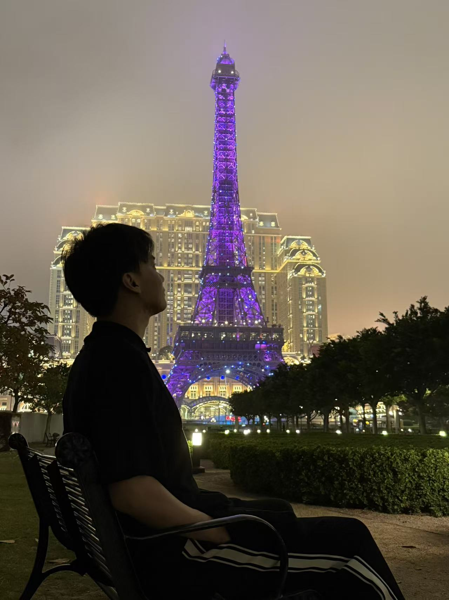

👋 Hi！I’m Owen.Hu
◆ Morphi Robot ｜具身智能 AI 算法工程师
◆ 研究方向：VLA · 快慢系统 · 触觉世界模型
◆ 兼职：具身智能与触觉方向｜投资技术顾问 · 天使投资人
Hey~我是 Owen.Hu。一名坐拥0顶会0顶刊的硕士研究生！从交通跨考到电子信息，又通过不断实习沿着智能眼镜、多模态感知一路走到机器人学习，在一次次项目和实习中逐渐明确了自己真正想做的方向。希望未来能参与造出真正走进家庭的通用机器人，探索通向物理世界 AGI 的可能路径。
本科就读于吉林大学，后在南方科技大学攻读电子信息工程硕士，并在中国科学院深圳先进院联合培养，师从熊璟教授。此前参与过手术机器人、 AI 眼镜、多模态理解、视触觉融合与灵巧手操作等方向的研究和实践，目前在 Morphi Robot 专注于 VLA、快慢系统和触觉世界模型相关研发。
工作中，我习惯把复杂问题逐层拆解，也愿意花时间追问问题背后的原因。工作之外，我希望保留一些不被任务占满的时间，让生活保持自己的节奏。
目前生活状态：疯狂减脂中！！！
个人介绍
关于我，也关于生活
这里不只记录工作。除了项目、研究和职业经历，我也想留下一些阶段性的思考与生活状态，让这个主页不只是一份被重新排版的简历~
生活里，我很珍惜自己对世界的热爱，也希望一直用真诚和善意对待遇到的人。只是很多时候，我还不够勇敢，面对未知、选择和关系时也会犹豫。希望自己能慢慢长出一颗更稳定、更强大的内心，不因为暂时的挫折否定自己，也能在真正想做的事情面前勇敢一点。
最近正在疯狂减脂。认真吃饭、规律训练、努力管住嘴，也把这件事当成一场和自己长期相处的小练习：少一点急于求成，多一点耐心和行动。工作之外，也想给运动、休息和偶尔的放空留一点位置，好好生活，也好好成为自己。
写在这里
关于我
我不太相信人生一定要沿着某条既定路线前进。很多时候，方向并不是提前想明白的，而是在真正做过一些事情、走过一些弯路之后，才逐渐变得清楚。
我曾经因为不知道自己想要什么而犹豫，也曾经因为害怕走错路而迟迟不敢开始。后来慢慢发现，所谓“正确答案”并不总是存在，重要的是在选择之后认真走下去，并且愿意为自己的选择负责。
现在的我依然不够勇敢，也还没有成为理想中的自己。但我希望保留对世界的好奇、对人的真诚，以及重新开始的能力。生活不只由那些被记录下来的成果组成，也包括一些没有结果的尝试、独处时的想法，以及在困难面前没有放弃的时刻。
现在，我在 Morphi Robot 担任具身智能算法工程师，主要关注 VTLA、快慢系统和触觉操作。很幸运，我的工作也在墨奇得到黄青虬和 Kevin老师的认可与指导。青虬老师曾任华为智驾 AI 一号位，如今是墨奇智能联合创始人兼 CTO；Kevin 老师则是墨奇智能首席架构师。比起这些履历，更打动我的是他们对待事情的方式：认真、谦逊，也足够低调，相信长期积累的价值，愿意把真正困难的问题一点点做深、做实。和他们一起工作，也让我慢慢明白，长期主义是在结果尚未出现时，依然愿意保持耐心，对问题负责，也对自己的选择负责。
我想继续做一些需要长期积累、也值得长期积累的事情。至于最后会走到哪里，也许还没有答案，但我愿意一边生活，一边慢慢靠近。
研究记录
研究经历
机器人的感知与操作
过去三年，我从交通运输跨到电子信息，又从智能眼镜、多模态理解一路走到机器人学习。表面上看，这是几次技术方向的变化；对我来说，它更像是一个不断认识自己的过程。我慢慢知道了自己对什么问题真正好奇，愿意为什么事情反复尝试，也开始接受成长并不总是线性的。
“We can only see a short distance ahead, but we can see plenty there that needs to be done.”
硕士阶段｜从触觉感知开始
进入南方科技大学后，我在熊璟教授的指导下开展手术机器人的视触觉感知研究，那是我第一次系统地接触传感器和机器人触觉感知。
从交通运输跨到电子信息时，我并没有一条特别清晰的路线，也会怀疑自己是不是起步太晚。后来我逐渐接受，方向并不是全部想清楚以后才开始，而是在持续做事的过程中慢慢变得清晰。熊璟教授教给我的不仅是怎样开展研究，也让我学会在没有标准答案的时候，先把问题拆开，再踏实地向前走一步。
在 CTO 欧阳剑与 Shuda Yu, Ph.D.（French Academy of Natural Sciences）的指导下，我研究了智能眼镜中的多传感器融合眼动追踪，以及基于触觉戒指的交互方式。相比学校里的研究，这段经历让我第一次更直接地面对噪声、延迟、稳定性、佩戴差异和用户体验等真实产品约束。
我也从中理解到，技术并不是越复杂越好，真正有价值的方案往往是在许多限制中仍然能够稳定工作。指标提升只是工作的一部分，更重要的是学会在理想与现实之间做出负责任的取舍。
在 Sijie Cheng, Ph.D.（清华大学AIR）的指导下，我开展了眼动增强多模态 VQA研究，并构建第一视角眼动追踪数据集。这段经历让我完整参与了从数据采集、语义标注到模型验证的流程，也开始思考人的视线能否作为显式注意力信号，帮助模型找到场景中真正重要的信息。
很多时间并不是花在模型本身，而是在数据整理和反复验证上。那些工作不一定最容易被看见，却直接决定了结论是否可信。我也慢慢明白，成长不总是来自一个漂亮的结果，也来自那些重复、琐碎，但必须有人认真完成的部分。
在我的伯乐和具身领路人 Jam Liang, Ph.D.（清华大学-伯克利深圳学院，前腾讯 Robotics X 实验室研究员）的指导下，我开始研究触觉 Diffusion Policy、视触觉融合预训练，也参与搭建了可穿戴外骨骼数据采集系统。这是我第一次真正进入接触密集型机器人操作：触觉不再只是额外的传感器通道，而是在物体滑动、接触偏移和操作即将失败时，帮助机器人判断状态的重要信息。
这段经历让我逐渐确定，触觉操作是自己愿意长期投入的方向。选择一个方向不只是判断它是否热门，更要看自己是否愿意反复面对其中困难而具体的问题。
在小鹏机器人中心灵巧操作团队工作期间，我使用强化学习训练高自由度多指灵巧手，围绕奖励设计、课程学习、复杂接触条件下的动作优化开展实验。这段经历让我更直观地认识到仿真与真实世界之间的距离。
训练失败、奖励失效和结果不稳定都是常见的事情。我开始学会不急着把一次失败归因于模型或自己，而是先回到任务定义，把问题变成可以验证的假设。研究带给我的一个变化，是对失败少一点情绪，对不确定性多一点耐心。
现在，我在 Morphi Robot 担任具身智能算法工程师，很荣幸得到 Kevin D., Ph.D. 的赏识，在他的指导下开展 VTLA、快慢系统和触觉世界模型研究。Kevin 博士毕业于 MIT（麻省理工学院），博士期间曾跟随 Edward H. Adelson 教授和 Alberto Rodriguez 教授学习：前者是 GelSight 触觉传感技术的开创者之一，后者现任 Boston Dynamics Atlas 的 Robot Behavior Director。我的工作覆盖数据表征、模型训练和真机闭环部署全流程；相比只让机器人学会一条成功轨迹，我更关心它能否及时根据高频的触觉反馈完成接触纠偏与动作修正。
从学生和实习生转为正式工程师之后，我关注的不再只是自己有没有完成任务，还包括问题是否被真正解决、方案能否持续运行持续迭代，以及最终结果由谁负责。我也逐渐理解，独立并不意味着一个人完成所有事情，而是能够主动发现问题、推动协作，并对结果保持责任感。
“What I cannot create, I do not understand.”
走到这里，过去看似分散的经历开始连在一起：智能眼镜让我理解注意力与交互，多模态研究让我理解数据与表征，触觉实验让我看见隐藏的接触状态，灵巧手强化学习让我开始理解动作，而 VTLA 则试图把感知、决策和执行真正连接起来。
三年里，我学会了很多算法知识和模型训练经验，也遇到了一些影响我做事方式的人。有人教我怎样把模糊的问题拆开，有人让我理解产品和研究之间的距离，也有人让我看到，真正长期的积累往往发生在结果被看见之前。
现在的我仍然没有完整答案，但已经比三年前更清楚自己愿意把时间花在哪里。我希望继续做那些必须进入真实世界、经过真实接触才能被验证的问题，并参与打造真正能够走进家庭的通用机器人，也在这个过程中，向物理世界的 AGI靠近一点。
随笔
持续思考
接触本身是隐藏状态，不是给图像再加一个通道。触觉
视觉能告诉机器人手在哪里，但接触发生后的细微变化，往往要靠触觉才能被真正看见。
一旦进入接触，高频执行便很重要。控制
高层策略可以慢一点，但接触发生的那一刻，执行必须足够快，也足够愿意根据状态改变。
联系
Contact me
这里会持续记录我在具身智能与触觉操作方向的项目、实验和思考，也会留下少量工作之外的个人状态。欢迎交流机器人学习、触觉感知、早期技术项目，以及家庭通用机器人的发展与落地。
Email：12333497@mail.sustech.edu.cn Tel：13904334985